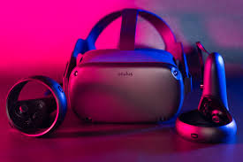
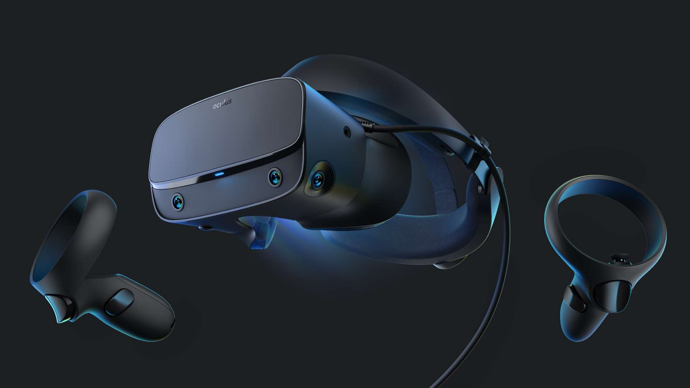
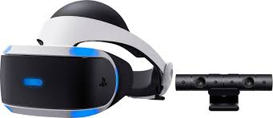

Originally funded as a Kickstarter project in 2012, and engineered with the help of John CarmackOculus became the early leader in Virtual Reality hardware for video games. Facebook bought Oculus in 2014 and brought the company’s high-end VR HMD to market for consumers. More recently, Oculus has seen success with the lower-price, lower-powered Oculus Go, and 2019 will see the release of multiple new iterations on the hardware, including the tethered Rift S and the stand-alone Oculus Quest.
The HTC Vive has been one of the best VR HMDs on the market since its consumer release back in 2016. Manufactured by HTC, the Vive was the first VR HMD to support SteamVR. The Vive has been locked in fierce competition with the Oculus Rift since its release, as both headsets aimed at the same top end of the VR enthusiast market. The Vive has proven itself a durable workhorse for enterprise solutions, while also delivering one of the best consumer VR experiences available. The Vive was first released back in 2016 and has gone through several iterations, with the addition of a wireless module.
Sony’s entry into the market is the lowest power of the three best-selling VR HMDs, but the PSVR has a big advantage over the Rift and Vive. Because it’s tethered to the Playstation 4 gaming system, there was an enormous, pre-existing user base of 10s of millions of gamers, many of whom were eager to try their hand at VR. Because that user base already had a PS4, Sony’s customers didn’t have to purchase/upgrade their computer hardware, making the PSVR the most “affordable” of the high-end HMDs. As such, the PSVR is the best-selling Virtual Reality HMD on the market, moving over 4 million units since its initial release, and showing that, if nothing else, VR gaming is here to stay.
| Our picks | Oculus Quest | Oculus Rift | Sony playstation VR |
|---|---|---|---|
|  |  |  | |
| type | Standalone | Tethered | Tethered |
| Resolustion | 1,600 by 1,440 (per eye) | 1,440 by 1,280 (per eye) | 1,080 by 960 (per eye) |
| Refresh rate | 72 Hz | 80 Hz | 120 Hz |
| Motion Detection | 6DOF | 6DOF | 6DOF |
| Controls | Oculus touch | Oculus touch | Dualshock 4, playstation move |
| Hardware platform | Android | PC | Playstion 4 |
| Software platform | Oculus | Oculus | Playstaion 4 |